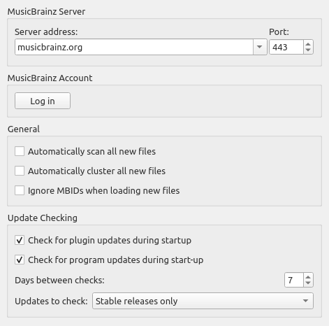

Options générales
{kind=link}
Adresse du serveur
Le nom de domaine du serveur de base de données MusicBrainz utilisé par Picard pour obtenir les détails de votre musique. Valeur par défaut : musicbrainz.org (pour le serveur principal MusicBrainz).
En plus des serveurs MusicBrainz standard fournis dans la liste déroulante, vous pouvez entrer manuellement une adresse alternative, telle que « localhost » si vous exécutez une copie locale du serveur. Lorsqu’un nom d’hôte de serveur alternatif est saisi, un avertissement sera affiché et il vous sera demandé de confirmer que vous voulez soumettre toutes les données à ce serveur alternatif.

Port
Le numéro de port du serveur. Valeur par défaut: 80 (pour le serveur MusicBrainz principal).
Nom d’utilisateur
Le nom d’utilisateur de votre site Web MusicBrainz, utilisé pour soumettre des empreintes acoustiques, récupérer et enregistrer des éléments dans vos collections et récupérer des balises personnelles de folksonomy.
Mot de passe
Le mot de passe de votre site Web MusicBrainz.
Analyser automatiquement tous les nouveaux fichiers
Cochez cette case si vous voulez que Picard analyse chaque fichier musical que vous ajoutez et recherche une empreinte AcoustID empreinte digitale. Cela prend du temps, mais peut être utile pour vous et MusicBrainz. Laissez cette case décochée si vous ne voulez pas que Picard fasse ce scan automatiquement. Dans tous les cas, vous pouvez demander à Picard de scanner un fichier musical particulier à tout moment en utilisant . Voir aussi Analyser les fichiers et Comprendre Empreintes acoustiques et AcoustIDs.
Automatiquement regrouper tous les nouveaux fichiers
Cochez cette case si vous voulez que Picard regroupe automatiquement tous les fichiers chargés dans l’album clusters. Ne la cochez pas si vous ne voulez pas que Picard fasse cela automatiquement. Dans tous les cas, vous pouvez demander à Picard de regrouper les fichiers à tout moment en utilisant . Voir aussi Rechercher des fichiers.
Note
Vous pouvez activer soit l’option « Analyser automatiquement tous les nouveaux fichiers », soit l’option « Regrouper automatiquement tous les nouveaux fichiers », mais pas les deux.
Ignorer les MBID lors du chargement de nouveaux fichiers
Si vous désactivez cette option, Picard n’utilisera pas les identifiants MusicBrainz (MBID) stockés dans les fichiers pour charger automatiquement la version MusicBrainz correspondante et faire correspondre le fichier chargé à la bonne piste. Ceci est utile lors du retraitement de fichiers qui ont déjà été marqués avec des informations incorrectes.
Vérifiez les mises à jour lors du démarrage
Cette option détermine si Picard vérifiera automatiquement les mises à jour du programme au démarrage. Dans tous les cas, vous pouvez demander à Picard de vérifier les mises à jour du programme à tout moment en utilisant .
Jours entre les chèques
Cette option vous permet de limiter la vérification automatique des mises à jour en sélectionnant l’intervalle, en jours, entre les vérifications. Réglez-le sur 1 si vous souhaitez effectuer une vérification quotidienne, 7 pour les vérifications hebdomadaires, etc. Notez que cela ne s’applique que si l’option « Vérifier les mises à jour au démarrage » est activée.
Mises à jour à vérifier
Cette option vous permet de sélectionner les niveaux de mise à jour à vérifier. Vos options sont :
Versions stables uniquement
Versions stables et bêta
Versions stables, bêta et dev
Par exemple, si vous vous abonner à « Versions stables uniquement », vous ne serez pas averti si une nouvelle version bêta ou de développement est publiée.
Note
La mise à jour vérifiant les paramètres associés et la commande peuvent ne pas être disponibles lorsque Picard est distribué sous forme de package. Dans ce cas, l’utilisateur doit vérifier auprès du responsable du package pour déterminer quand une mise à jour est disponible.